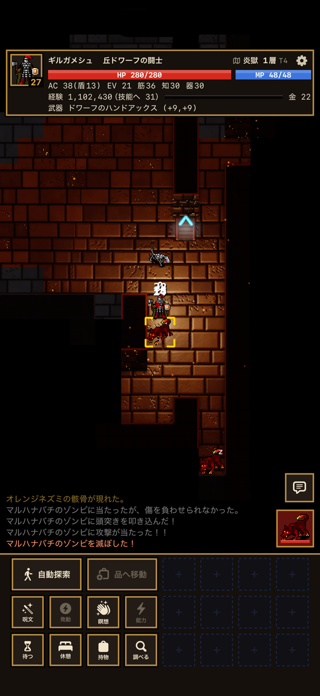
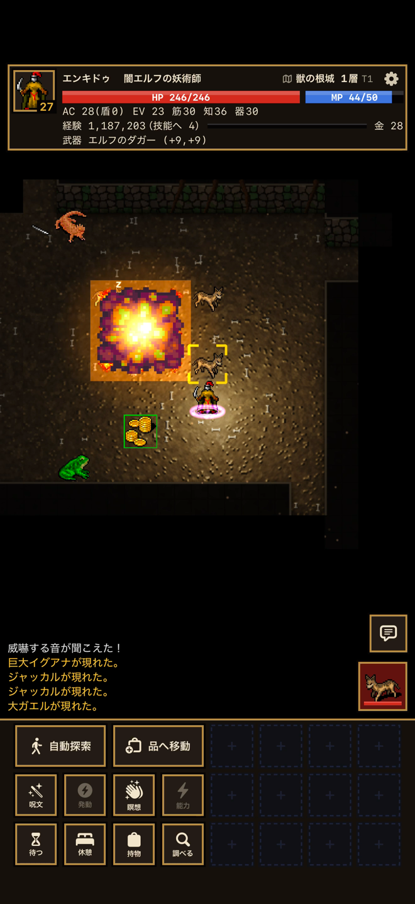
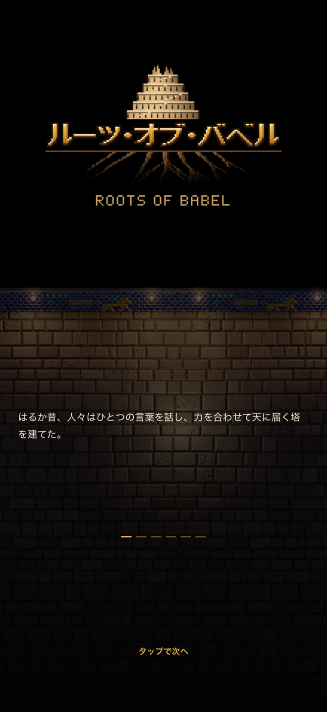
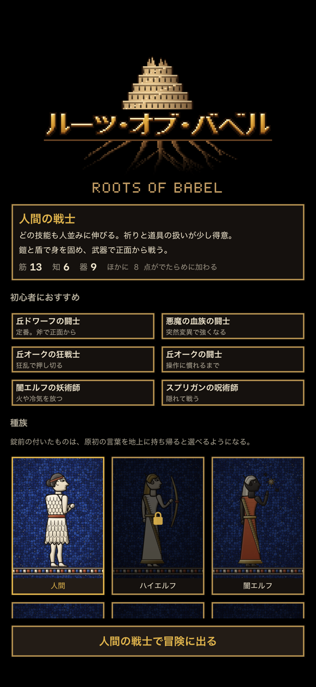
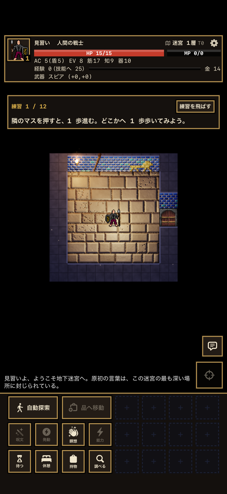
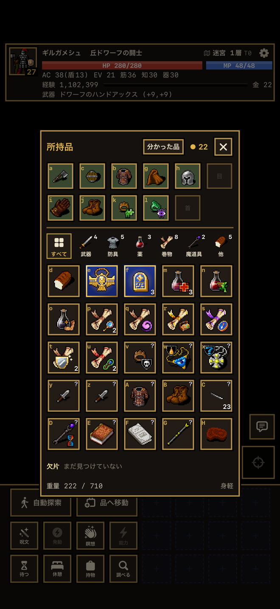

毎回かたちの変わる迷宮
入るたびに地図も怪物も品も変わります。倒れたらそこで終わりの緊張感。
ROGUELIKE / iPhone
ROOTS OF BABEL
塔の根は、地の底へ。
原初の言葉を、地上へ。
毎回かたちの変わる地下迷宮を、一歩ずつ進むターン制のローグライク。倒れたらそこで終わり。だからこそ、一歩ごとの判断が冒険になります。
App Store で近日配信

STORY
はるか昔、天に届く塔を建てた人々は、言葉を乱されて散りぢりになった。
塔の根は地の底へ伸び、果てしない地下迷宮となった。
その最も深い場所に、乱される前の「原初の言葉」が封じられているという。
言葉の欠片を集め、封印を解き、原初の言葉を地上へ持ち帰れ。
タップで移動、長押しで調べる。むずかしい操作はいりません。
入るたびに地図も怪物も品も変わります。倒れたらそこで終わりの緊張感。
6 柱の神への信仰、呪文、突然変異、変身。同じ冒険は二度とありません。
獣の根城、沼、地下の神殿、そして欠片を守る者たち。深く潜るほど世界が広がります。
自動探索、品への移動、ボタンの並べ替えとマクロ。歩き回る手間を減らせます。
最初に「練習の地下」で基本を体験できます。遊びながら、その場でヒントが出ます。
いつ閉じても続きから。広告もアプリ内課金も、データの収集もありません。
瑠璃の釉薬煉瓦と金の装飾。古代メソポタミアの意匠で描いた地下世界。



